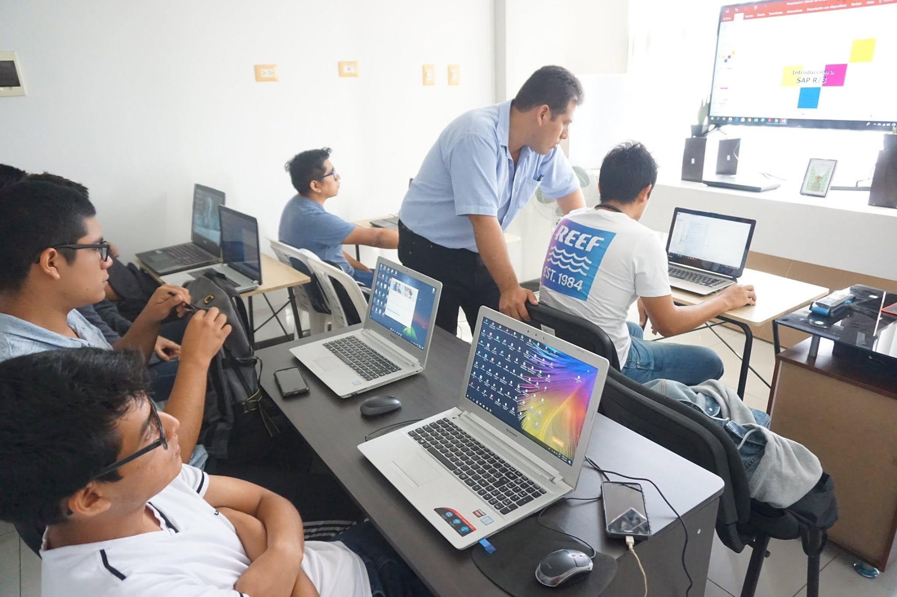
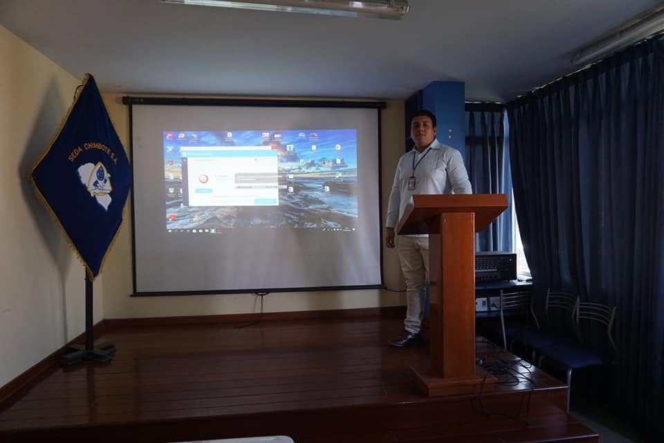
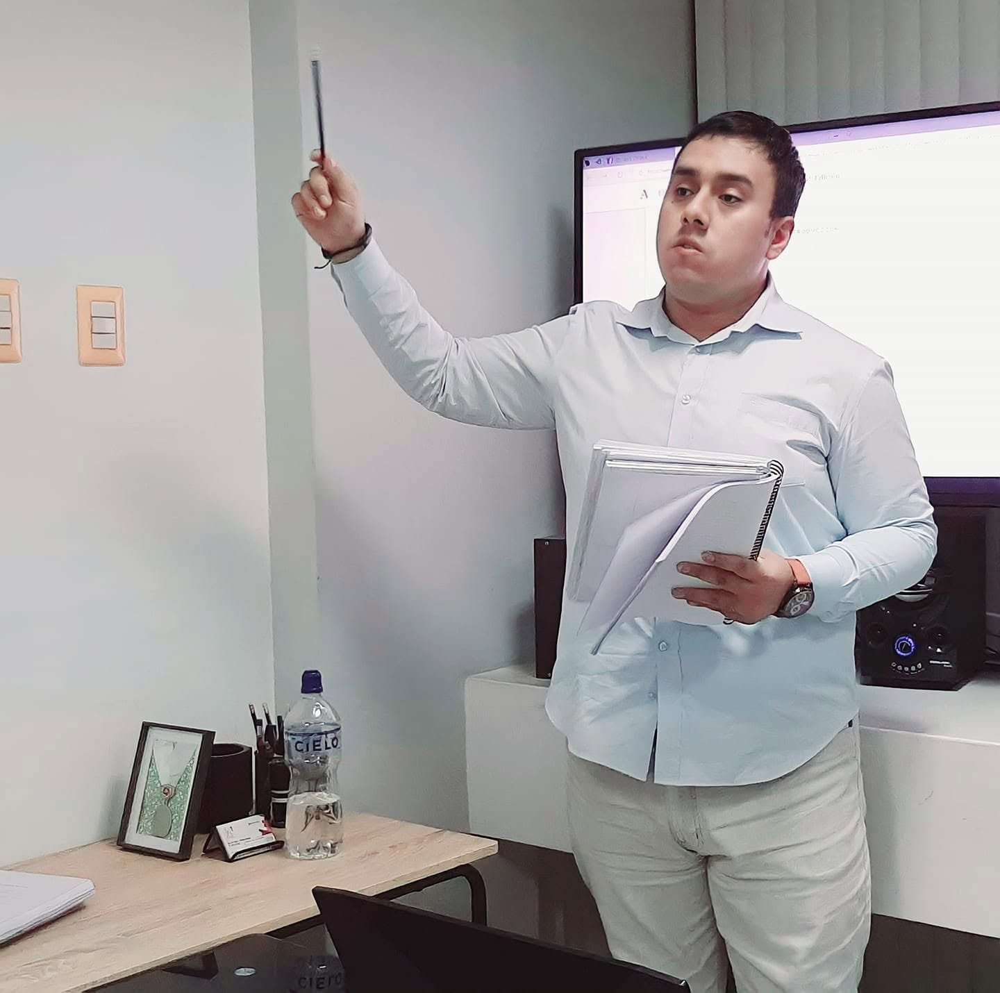
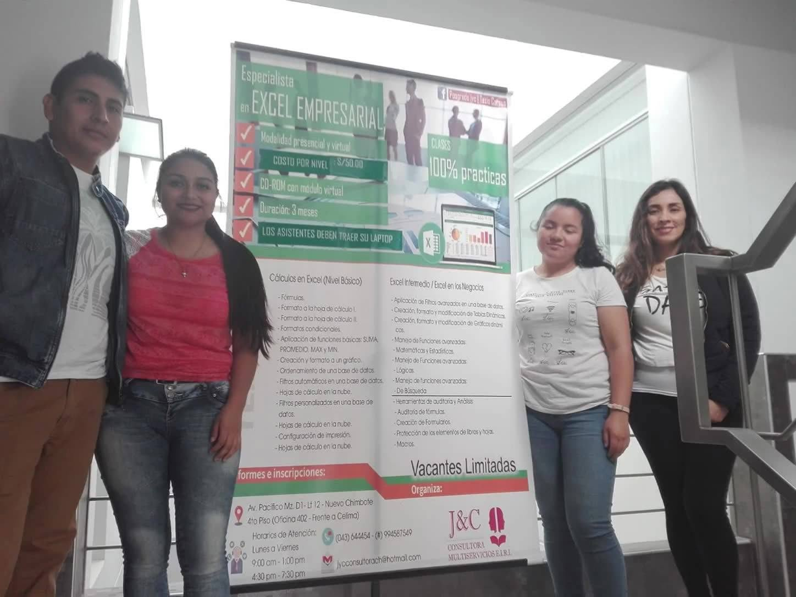
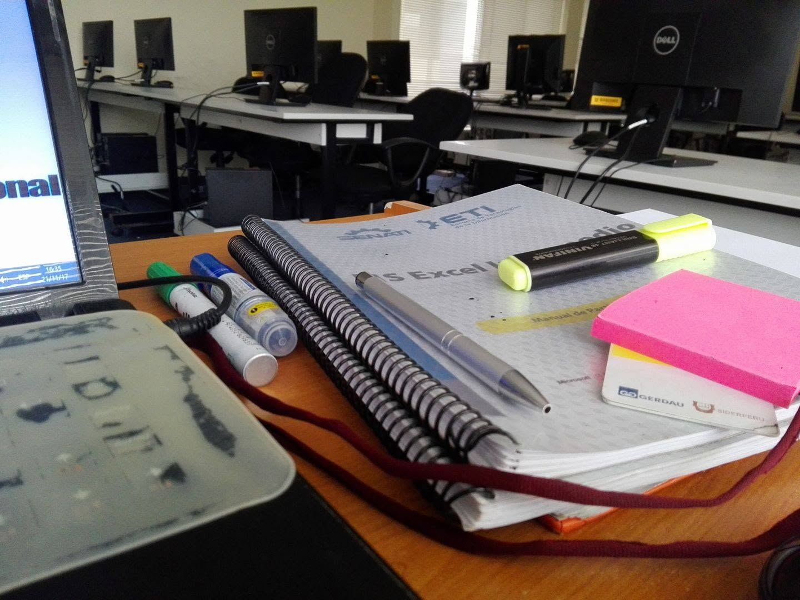
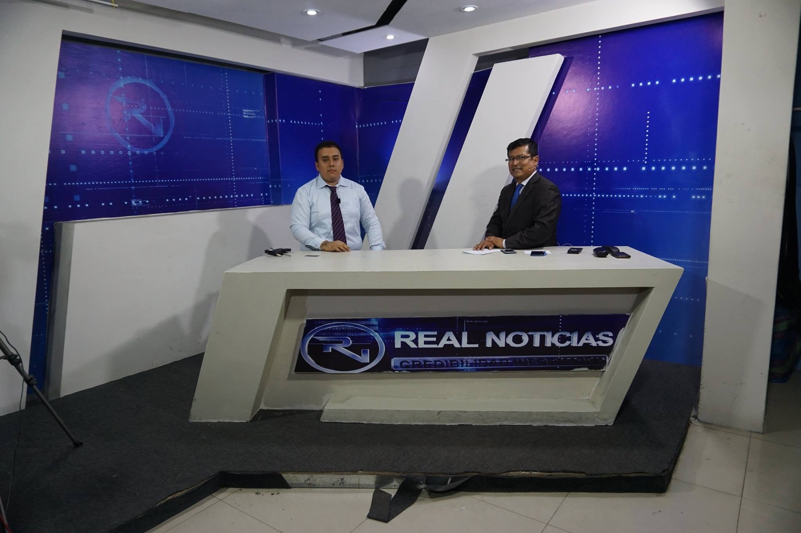
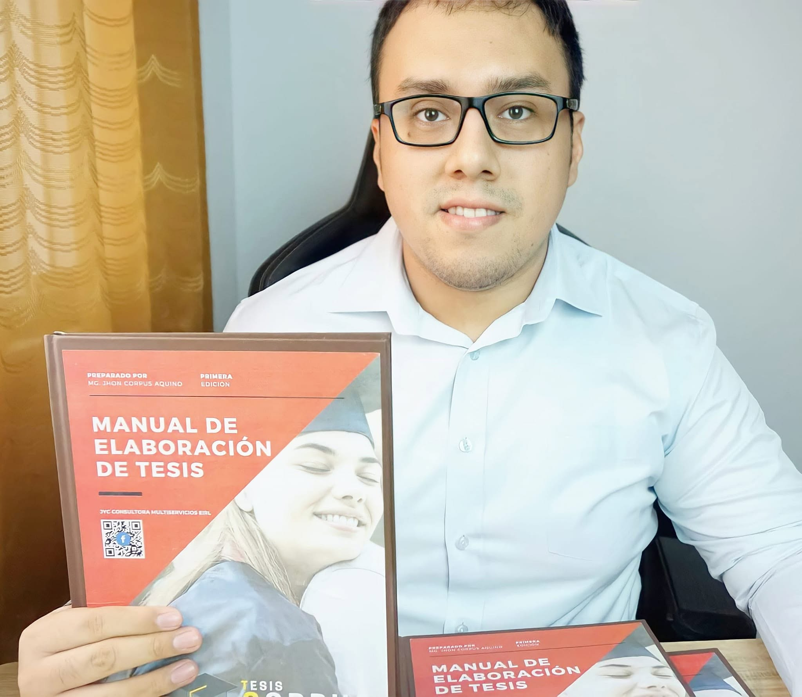
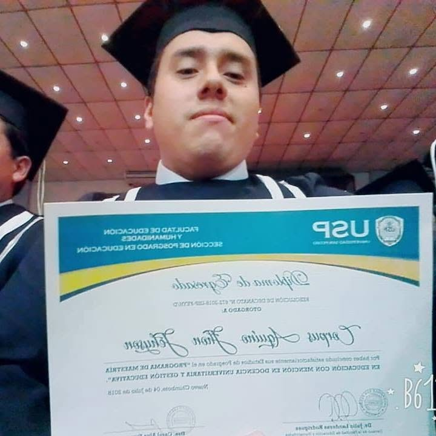

Inteligencia Artificial
IA generativa, productividad, asistentes inteligentes y aplicación de inteligencia artificial a procesos profesionales y de investigación.
Ingeniero de Sistemas con más de 10 años de experiencia profesional en investigación, análisis de datos, inteligencia artificial, formación profesional, consultoría y desarrollo de soluciones tecnológicas.
Mi experiencia profesional se ha desarrollado en diferentes ámbitos, conectando la tecnología con la investigación, la formación y la solución de problemas reales.
Soy Ingeniero de Sistemas con más de 10 años de experiencia profesional en investigación académica, análisis de datos, inteligencia artificial, transformación digital, docencia, consultoría y desarrollo de soluciones tecnológicas.
A lo largo de mi trayectoria he trabajado con estudiantes, docentes, investigadores, profesionales y organizaciones, desarrollando proyectos relacionados con análisis estadístico, investigación científica, herramientas digitales, optimización de procesos y formación profesional.
Actualmente desarrollo proyectos que integran tecnología y conocimiento, entre ellos Corpus Educa, TesiX, soluciones de software, proyectos de análisis de datos y nuevas iniciativas relacionadas con inteligencia artificial.
También soy autor de obras relacionadas con la investigación y la creación literaria, combinando mi perfil tecnológico con la generación de conocimiento y creatividad.
Comprender el problema, organizar el conocimiento, utilizar la tecnología adecuada y convertirla en una solución útil.
IA generativa, productividad, asistentes inteligentes y aplicación de inteligencia artificial a procesos profesionales y de investigación.
Estadística aplicada, análisis exploratorio, modelamiento, visualización y análisis predictivo.
Optimización de procesos mediante herramientas digitales, automatización y soluciones tecnológicas.
Desarrollo de soluciones empresariales y herramientas orientadas a resolver necesidades reales.
Integración de tecnología, datos y procesos para mejorar la eficiencia de las organizaciones.
Metodología, estadística, búsqueda científica, revisión bibliográfica y acompañamiento de investigaciones.
Diseño y desarrollo de programas de capacitación para estudiantes, docentes y profesionales.
Gestión de proyectos, coordinación de especialistas, consultoría y diseño de soluciones profesionales.
Una trayectoria construida entre tecnología, investigación, educación, consultoría y gestión.
Experiencia de capacitación en instituciones como SENATI, CETPRO Santa María de Guadalupe y otros espacios de formación profesional.
Algunos momentos que representan diferentes etapas de mi trayectoria profesional.

Gestión y coordinación de capacitación especializada mediante la contratación de un especialista.

Participación como ponente en SEDA Chimbote.

Acompañamiento de investigaciones doctorales y elaboración de artículos científicos.

Capacitación práctica orientada al entorno profesional.

Formación en informática, Excel, Power BI y herramientas digitales.

Entrevista sobre investigación y conocimiento académico en Real Noticias de Chimbote.
Durante más de una década he acompañado proyectos de investigación en diferentes niveles académicos y profesionales, integrando metodología, estadística, herramientas digitales e inteligencia artificial.
Experiencia en asesoría metodológica, estadística, procesamiento de datos y acompañamiento de proyectos de investigación.
Una estrategia propia para sistematizar y delimitar ideas de investigación.

El método CORPUS organiza el proceso inicial de una investigación a partir de seis elementos que permiten pasar de una idea general hacia una propuesta delimitada.
Empresa orientada a la capacitación profesional y al desarrollo de soluciones de formación para organizaciones, profesionales, docentes e investigadores.
Visitar Corpus Educa →Asistente virtual basado en inteligencia artificial orientado al acompañamiento del proceso de investigación y desarrollo de tesis.
Sistema de gestión empresarial desarrollado para apoyar procesos de ventas, inventario, compras, caja y reportes.
Sistema de verificación mediante código y QR, integrado con una base de datos y una interfaz web.
Ver sistema →Plataforma de formación virtual para el desarrollo de cursos y programas de capacitación profesional.
Visitar aula virtual →Desarrollo de casos y modelos de análisis orientados a problemas como abandono, propensión de compra, comportamiento de clientes y predicción.
La generación de conocimiento también forma parte de mi trayectoria profesional.

Obra orientada a apoyar la organización y desarrollo del proceso de investigación académica.
Obra de fantasía épica que representa una faceta creativa de mi trayectoria. La obra se encuentra registrada ante INDECOPI.
Mención en Gestión Educativa y Educación Universitaria.
Universidad San Pedro – ChimboteFormación profesional en sistemas, informática, tecnología y desarrollo de soluciones.
Universidad César VallejoFormación complementaria en SPSS, análisis estadístico, investigación y herramientas digitales.

La formación profesional no termina con un título. Mi trayectoria ha estado acompañada de aprendizaje continuo en tecnología, investigación, educación, análisis de datos e inteligencia artificial.
Capacitación y soluciones para la transformación digital y el desarrollo profesional.
Una iniciativa orientada a desarrollar programas de capacitación y soluciones de formación mediante una red de especialistas.
Conocer Corpus Educa →Estoy interesado en colaborar en proyectos relacionados con tecnología, inteligencia artificial, datos, investigación, capacitación y transformación digital.